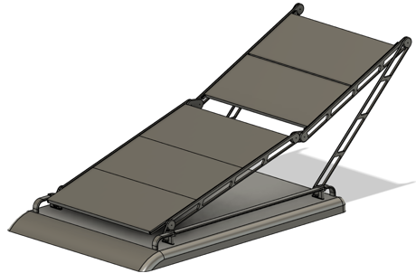
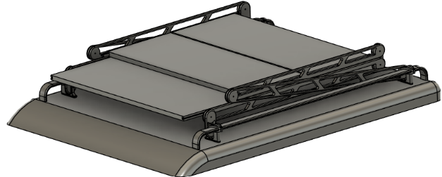
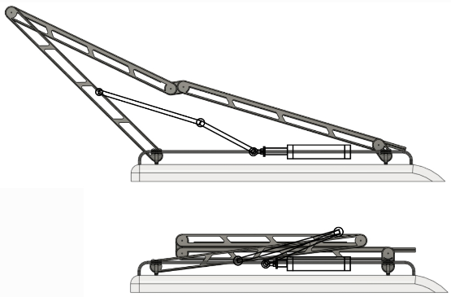
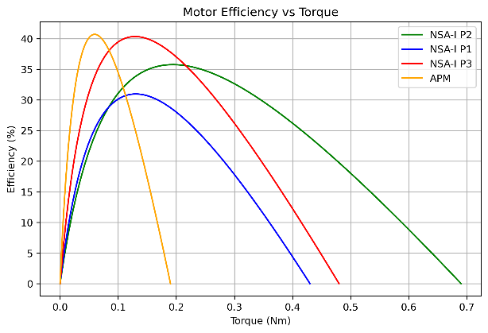

Mechanical design · Mechanisms
Deployable vehicle-mounted solar array
A compact roof-mounted array designed to expand its collection area when a camper is parked.
September 2024 – May 2025

Project overview
Our team developed a deployable solar array for UK campers. Consumer research and environmental studies informed a quantified product design specification. We explored concepts through rapid linkage prototypes and a weighted trade-off matrix, then developed CAD and assessed the proposed system’s feasibility.
My contribution
My contributions covered consumer research, the product design specification, concept generation, linkage prototyping, CAD iterations and material selection. I also designed a compound gearbox using catalogue gears to meet the target velocity ratio.
Engineering approach
- Translate user needs into measurable requirements for deployment, mass and packaging.
- Compare linkage concepts before committing to the final arrangement.
- Use catalogue gear selection and modelling to develop the compound gearbox.
- Assess the energy benefit alongside added drag, system mass and cost.
Results and scope
The design exceeded its 2:1 area-expansion target. Calculated deployment time was below the 25-second requirement and estimated mass was below the 80 kg limit. The seven-day peak-condition scenario compared 339.6 Wh of drag energy with up to 3,080 Wh of potential generation.
These are design calculations and feasibility estimates, not measured full-system prototype performance. Energy generation depends on the scenario and conditions.
Project figures






Reports
Group coursework reports by Ka Hin Cheung, Ethan Smith, James Matteucci and Alex Winter. My individual contribution is described above.